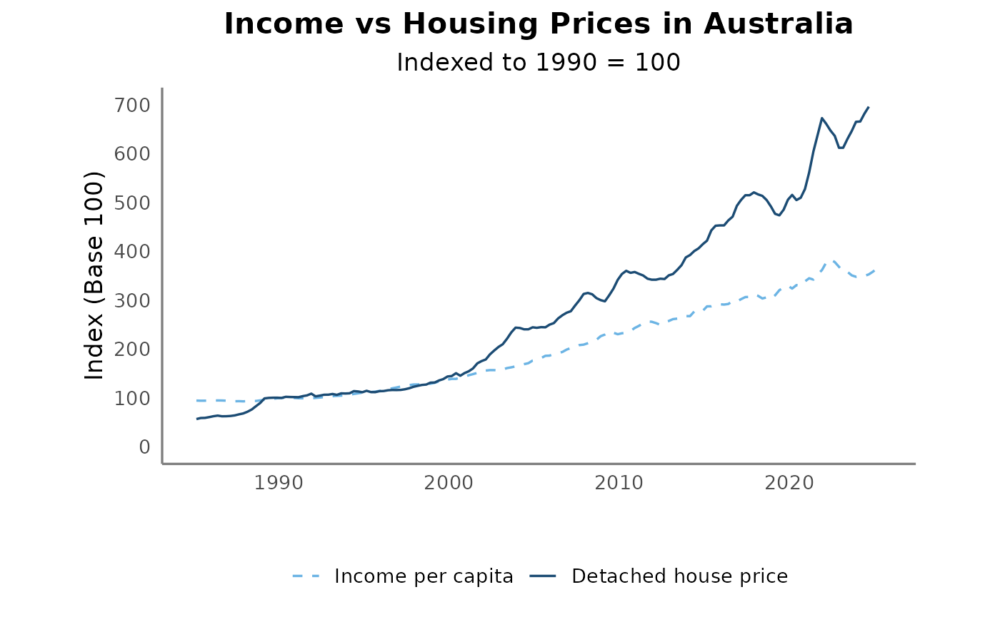
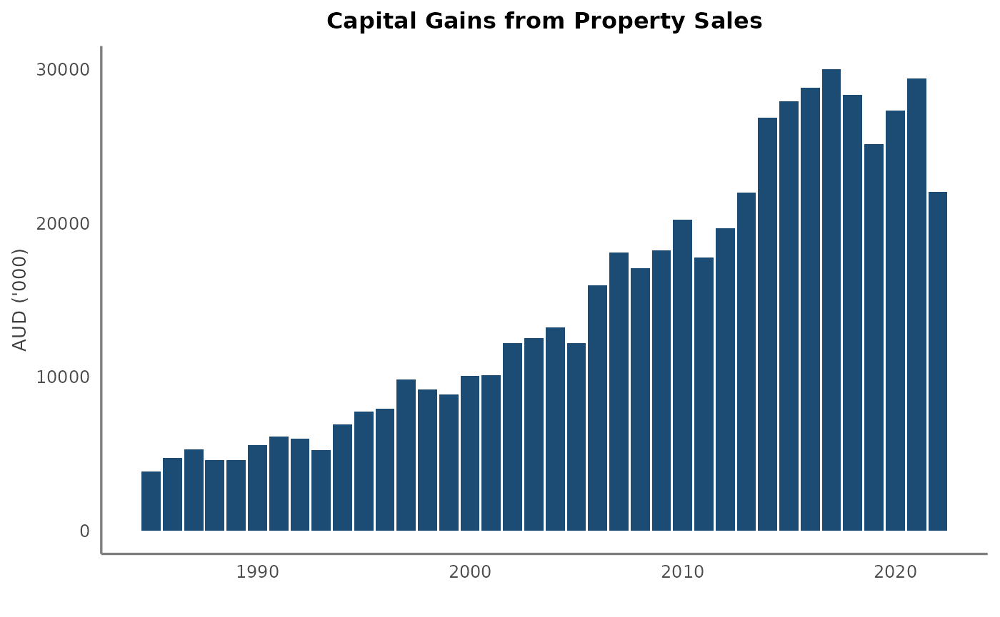
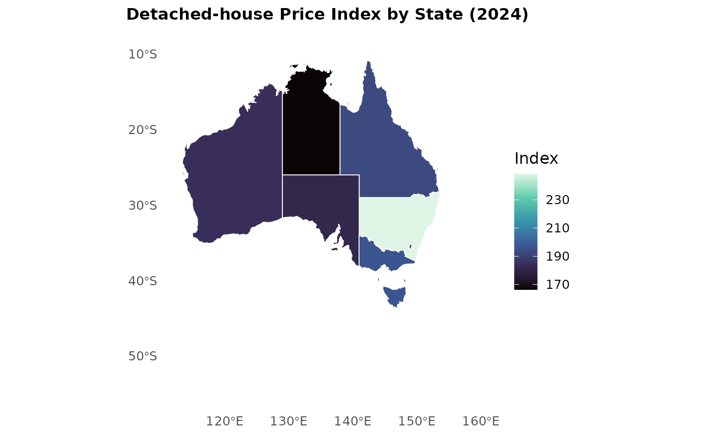

Why Australia's Housing Boom Outpaced Incomes
Exploring three decades of imbalance between wages, homes, and capital gains
Kim Yen Le
2025-11-05
example-analysis.RmdIntroduction
In 2024, Guardian Australia asked a big question: “How did Australia’s housing market get so bad?”
For decades, Australian home prices have climbed far faster than
wages. This short analysis uses the housepack data and
tools to examine how real disposable income, detached house
prices, and capital gains evolved since 1985. The goal is to
visualise the long-term divergence and discuss what it implies for
affordability.
Income vs House Prices
We start by comparing household income and detached-house prices on a base-100 index (1990 = 100).
compare_trends(income_pc, detached_full, base_year = 1990)
The chart shows that while both series rose after the early-1990s recession, house prices surged far beyond incomes, especially in the 2000s and again post-2020. By 2024, the national house price index is about six times its 1990 level, whereas income per capita barely quadrupled.
Capital Gains: Who Benefited?
Housing appreciation also fuels capital gains for owners.
The cgt_full dataset tracks average taxable
capital gains among individuals.
ggplot(cgt_full, aes(x = Year, y = Total_gain_adj)) +
geom_col(fill = "#1c4c74") +
labs(
title = "Capital Gains from Property Sales",
y = "AUD ('000)", x = ""
) +
theme_housepack
Capital gains spiked in the mid-2000s and again during the pandemic housing surge. This pattern reinforces the wealth divide between those who already owned property and those trying to enter the market.
Regional Divergence
Not every state experienced the boom equally.
We can inspect 2024 values from detached_ful to map
where housing pressure is greatest.
library(sf)
library(rnaturalearth)
aus_map <- rnaturalearth::ne_states(country = "australia", returnclass = "sf") |>
dplyr::filter(!name %in% c("Ashmore and Cartier Islands", "Coral Sea Islands"))
latest_year <- detached_full |> filter(Year == 2024) |>
select(Year, Quarter, Sydney:Canberra) |>
summarise(across(Sydney:Canberra, mean, na.rm = TRUE)) |>
tidyr::pivot_longer(everything(), names_to = "City", values_to = "Index") |>
mutate(State = recode(City,
"Sydney" = "New South Wales", "Melbourne" = "Victoria",
"Brisbane" = "Queensland", "Adelaide" = "South Australia",
"Perth" = "Western Australia", "Hobart" = "Tasmania",
"Darwin" = "Northern Territory", "Canberra" = "Australian Capital Territory"
))
map_data <- aus_map |> left_join(latest_year, by = c("name" = "State"))
ggplot(map_data) +
geom_sf(aes(fill = Index), color = "white", linewidth = 0.3) +
scale_fill_viridis_c(option = "mako", na.value = "grey90") +
labs(title = "Detached-house Price Index by State (2024)", fill = "Index") +
theme_minimal(base_size = 12) +
theme( plot.title = ggplot2::element_text(
face = "bold", hjust = 0.5, size = 12),
panel.grid = ggplot2::element_blank())
New South Wales leads the pack with an index near 250, far above the 170–190 range seen in most other states. This confirms that the affordability crisis is geographically concentrated.
What Does It All Mean?
Real wages have grown slowly compared with house prices.
Taxable capital gains have risen sharply, reflecting windfalls for property investors.
Regional inequality has deepened - Sydney and Melbourne dominate the boom.
In short, Australia’s housing market has decoupled from incomes. While structural factors like credit, zoning, and population growth play major roles, tax policy has also amplified the imbalance.
The rise in taxable capital gains aligns with decades of generous investment incentives. Negative gearing allows investors to offset property losses against other income, encouraging leveraged investment in housing. Meanwhile, the capital-gains tax discount (introduced in 1999) halves the taxable portion of long-term gains, further rewarding speculation over owner-occupation.
Our data shows the outcome - income lagging far behind housing wealth - but these policies help explain why housing has become such a lucrative, unequal market.
Explore It Yourself
Launch the interactive dashboard directly from the package:
The Shiny app allows users to:
Toggle between income, housing, and capital-gains views
Explore yearly and regional changes
Compare states interactively on a map
References
Guardian Australia. (2023). How did Australia’s housing market
get so bad, and is it all negative gearing’s fault? [Video].
YouTube.
https://www.youtube.com/watch?v=iqUFERBJwoY